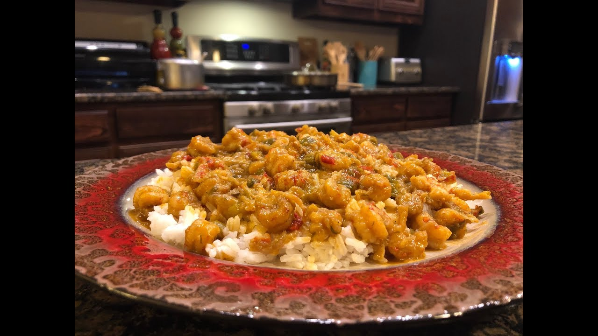

Etouffee
And last but not least, it's time to step away from the meats and grab some seafood.
When people think of Louisiana, they think of two things: Swamps and Crawfish, and what better way to prove them right than serving up a plate of home-made crawfish etouffee. Perfect as a side or just a meal by itself, this dish will have you coming back for seconds and maybe even a midnight snack (just don't forget the tums).
Ingredients:
- 2 Onions
- 2 Sticks of Celery
- 1 Green Bell Pepper
- 1 Red Bell Pepper
- 1 Bunch of Green Onions
- 4 Cloves of Garlic
- 2 Sticks of Butter
- 1 Tablespoon Cajun or Creole Seasoning
- 1/4 Teaspoon Cayenne Pepper
- 1/4 Teaspoon Salt
- 1/3 Cup of Flour
- 2 lbs Louisiana Crawfish
- 2 Cups of Hot Water (Add more if desired)
Steps:
- Start out by heating a Pot or Large Pan to a Medium/Low heat.
- Chop the Onion, Celery, Red Bell Pepper, Green Bell Pepper, and Green Onions.
- Drop two Sticks of Butter into your hot pot and melt completely.
- Add the chopped vegetables to the pot and raise burner to a medium.
- Add the Cajun Seasoning, Cayenne Pepper, and Salt.
- Sauté for about 20 minutes.
- Meanwhile chop the four cloves of Garlic.
- After 20 minuets of sautéing, add the garlic and sauté for another 10 minutes.
- After 10 more minuets of sautéing, push the vegetables to one side of the pot, add the 1/3 cup of flour and blend into the butter. Once the flour is mixed in well, stir everything altogether.
- Sauté for another 30 minutes. Be very cautious during this time. If fire seems a little high, lower it.
- Around this time you want to begin cooking some rice.
- With about 3 minutes left of sautéing, begin heating 2 cups of water in the microwave.
- Add a little bit of the hot water to the pot, and stir until it’s a creamy mixture.
- Add the Crawfish and rest of the hot water to the pot. Blend evenly.
- Raise the heat to where you see a slight boil.
- Cover, and lower to a simmering heat. Cook for about 15-20 minutes.
- (f you feel as though you would like a thinner sauce, just add a little more water. However, taste to see if you need more seasoning.)